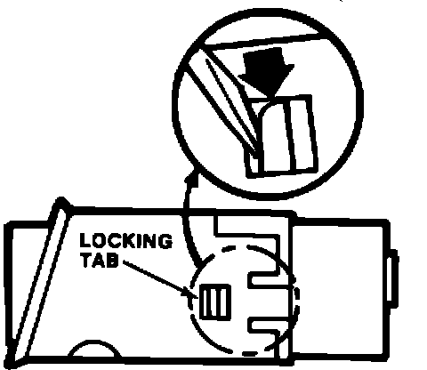
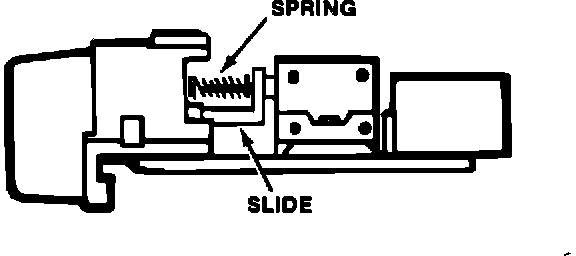

Main Switch - Hazard/Rear Defogger/Cruise Control/Repair
87acura01YEAR MODEL APPLICATION
1986 LEGEND Up to
VIN JH4KA...GC005402
January 19, 1987
87-001
Hazard, Rear Defogger and Cruise Control Main Switch Repair
Improved replacement parts are available to repair hazard, rear defogger and cruise control main switches.
NOTE:
^ The repair procedure and replacement parts are identical for all three switches.
^ Up to VIN JH4KA . . . GC005402, if any one of the switches requires repair, install the improved parts in all three.
^ After VIN JH4KA . . . GC005402, repair only the affected switch.

PROCEDURE
1. Remove the instrument panel, as described on page 20-46 of the Service Manual, then remove the switches, as shown on page 20-48.
2. On each switch, depress the two locking tabs with a small flat tip screwdriver and remove the outer switch case.
3. Remove and retain the larger of the two springs.

4. Pry out the slide with a small flat tip screwdriver. Discard the slide and the smaller spring.
5. Push the new slide and spring into place.
6. Reinstall the larger spring that you removed in step 3.
7. Reinstall the outer switch case, making sure it snaps into place.
8. Reinstall the switches and instrument panel.
PARTS INFORMATION
Slide: P/N 35511-SD4-003
Spring: P/N 35512-SD4-003
WARRANTY CLAIM INFORMATION
Operation number: 754100
Flat rate time: 0.5 hour for all three switches Failed part P/N: 35510-SD4-A01 (hazard switch) 35500-SD4-A01 (rear defogger switch) 36775-SD4-A01 (cruise control main switch)
Defect code: 074
Contention code: B99